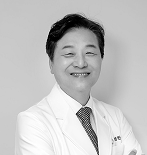
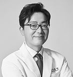
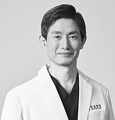

About KDH
Since 1994
32
years
ANNIUVERSARY
Since 1994
32Years
About
Kwangdong Hospital
Kwangdong Hospital, located near COEX in Gangnam Midtown, Seoul, is a premium integrative medical center that combines the precision of modern Western medicine with the healing wisdom of traditional Korean medicine (Hanbang).Founded by Kwangdong Pharmaceutical, a trusted leader in Korean healthcare, the hospital embraces the philosophy of “Total Life Care”—offering everything from preventive health check-ups and advanced diagnostics to treatment, rehabilitation, regenerative therapy, and anti-aging wellness, all under one roof. Integrative & Regenerative Medicine At Kwangdong Hospital, Western-trained medical specialists and Korean medicine doctors work collaboratively to deliver evidence-based, personalized care.Patients benefit from state-of-the-art diagnostics (MRI, CT, AI-assisted endoscopy) combined with acupuncture, herbal medicine, and functional rehabilitation, integrating the science of modern medicine with traditional healing. We also specialize in cell-based regenerative and anti-aging medicine, including PRP (Platelet-Rich Plasma), Rejuran PN/DNA skin boosters, and stem-cell therapies that restore skin vitality, body balance, and immune strength from the inside out. Comprehensive One-Stop Care From neurology, orthopedics, internal medicine, and rehabilitation to allergy and respiratory care, functional medicine, and aesthetic regenerative dermatology, Kwangdong Hospital provides a truly comprehensive healthcare system for both medical treatment and holistic wellness. Our Sports Medicine & Rehabilitation Center features professional exercise therapists who design customized recovery programs after surgery or injury.We also offer personalized IV infusion programs for anti-aging, immune boosting, and detox, as well as specialized immune disorder treatments integrating Western and Korean medicine. The Global Health Check-up Center, located near COEX, provides same-day reservations, examinations, and results, ensuring convenient and efficient care for both domestic and international patients. A Global Standard of Care Equipped with cutting-edge medical facilities, multilingual coordinators (English, Japanese, Chinese, Russian, and Mongolian), and a patient-centered philosophy, Kwangdong Hospital leads Korea’s new era of integrative and regenerative medicine—where science meets Hanbang, and healing begins beyond borders.
Kwangdong Hospital — Your trusted Gangnam medical center for health, beauty, and longevity.
Our Medical Team
Kwangdong Hospital, founded by Kwangdong Pharmaceutical, has been a trusted name in healthcare for ever 30 years.
- 
- 
- 
At Kwangdong Hospital, our medical excellence is built upon collaboration between university-hospital–trained Western medicine specialists and renowned Korean medicine (Hanbang) doctors. Together, they deliver truly integrative, evidence-based care that combines advanced medical science with traditional healing wisdom. Each department is led by experienced physicians recognized for their expertise, compassion, and dedication to personalized patient care. Our team approach ensures that every patient receives comprehensive, precise, and holistic treatment—from diagnosis to recovery and wellness.
Our Service
Outpatient Service Process
(One- stop Service)
Step. 01
Make an Appointment
- By calling us
-
Whats App
+82-10-6352-3526
- By requesting online
-
English@ekwangdong.co.kr mail
Step. 02
Visit the kwangdong Hospital
- Please visit the reception desk on the 1st floor, where our dedicated international medical coordinator will assist you.
Kindly remember to bring your passport when you visit.
Step. 03
Consult your Physician
You will receive medical care in the corresponding department. The physician will explain the consultation, examination, and treatment plan, and, if necessary, provide multidisciplinary care in collaboration with other departments.
Step. 04
Payment
Medical fees can be paid in Korean won or by credit card.
If the hospital has a service agreement with your overseas insurance provider, we will handle the payment process and claim submission directly with the insurer.An English receipt can be issued upon request.
Step. 05
Receive Prescription Medication
Once payment is completed, you may pick up your prescribed medication at the pharmacy.For customized herbal medicine, the preparation will be completed and available for pickup the following day.
KD Premium
Health Screening
KD Health
Check-up Programs
At Kwangdong Hospital, we offer both Standard Programs(essential screening) and Premium Programs(comprehensive diagnostic screening) designed to assess overall health and detect specific conditions at an earty stage.
KD SNS
KD Hosopital
Hospital Location
Kwang Dong Hospital
612, Bongeunsa-ro, Gangnam-gu, Seoul